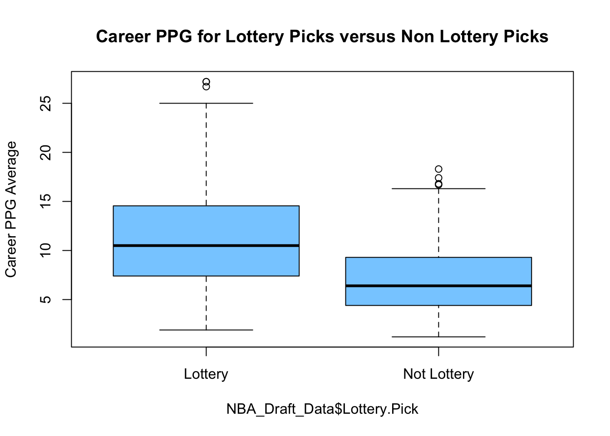
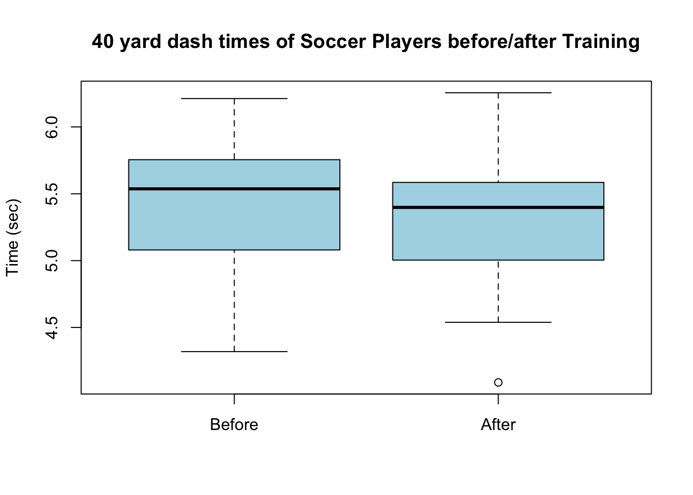
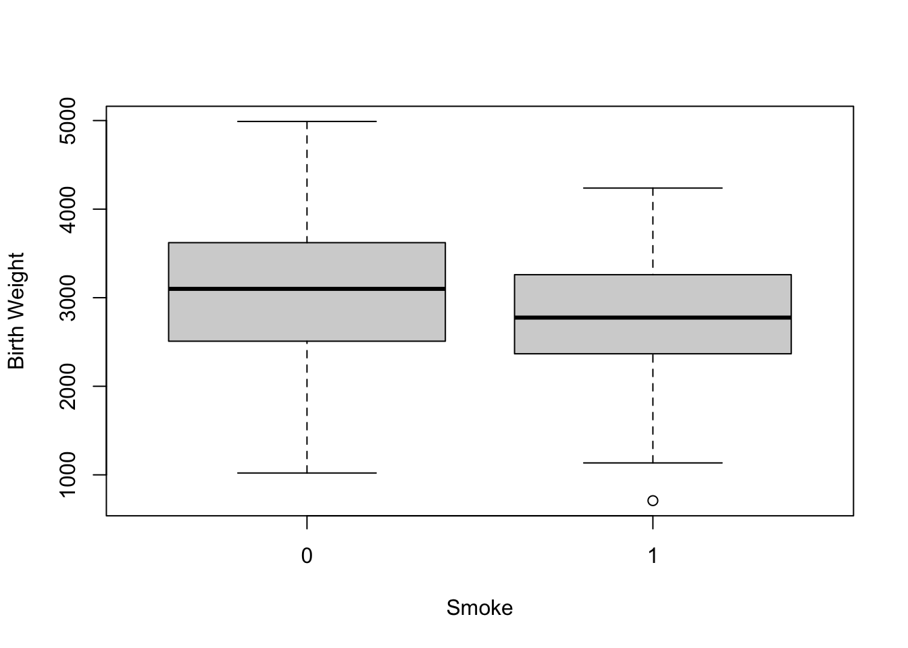

Chapter 15 Hypothesis Testing: Two Sample Tests
15.1 Two Sample t test
We can also use the t test command to conduct a hypothesis test on data where we have samples from two populations. To introduce this lets consider an example from sports analytics. In particular, let us consider the NBA draft and the value of a lottery pick in the draft. Teams which do make the playoffs are entered into a lottery to determine the order of the top picks in the draft for the following year. These top 14 picks are called lottery picks.
Using historical data we might want to investigate the value of a lottery pick against those players who were selected outside the lottery.
data("NBA_Draft_Data")
NBA_Draft_Data$Lottery.Pick = ifelse(NBA_Draft_Data$Pick.Number <= 14, "Lottery",
"Not Lottery") ##create a lottery pick columnWe can now make a boxplot comparing the career scoring averages of the lottery picks between these two pick levels.
boxplot(NBA_Draft_Data$PTS ~ NBA_Draft_Data$Lottery.Pick, ylab = "Career PPG Average",
main = "Career PPG for Lottery Picks versus Non Lottery Picks", col = "skyblue1")
From this boxplot we notice that the lottery picks tend to have a higher point per game (PPG) average. However, we certainly see many exceptions to this rule. We can also compute the averages of the PTS column for these two groups:
| Lottery.Pick | ppg | NumberPlayers |
|---|---|---|
| Lottery | 11.236927 | 371 |
| Not Lottery | 7.107924 | 366 |
This table once again demonstrates that the lottery picks tend to average more points. However, we might like to test this trend to see if have sufficient evidence to conclude this trend is real (this could also just be a function of sampling error).
15.1.1 Regression analysis
Our first technique for looking for a difference between our two categories is linear regression with a categorical explanatory variable. We fit a regression model of the form: \[PTS=\beta \delta_{\text{ not lottery}}+\alpha\] Where \(\delta_{\text{ not lottery}}\) is equal to one if the draft pick fell outside the lottery and zero otherwise.
lm.draft = lm(PTS ~ Lottery.Pick, data = NBA_Draft_Data)
summary(lm.draft)##
## Call:
## lm(formula = PTS ~ Lottery.Pick, data = NBA_Draft_Data)
##
## Residuals:
## Min 1Q Median 3Q Max
## -9.3369 -3.2369 -0.7079 2.7631 15.9631
##
## Coefficients:
## Estimate Std. Error t value Pr(>|t|)
## (Intercept) 11.2369 0.2329 48.24 <2e-16 ***
## Lottery.PickNot Lottery -4.1290 0.3305 -12.49 <2e-16 ***
## ---
## Signif. codes: 0 '***' 0.001 '**' 0.01 '*' 0.05 '.' 0.1 ' ' 1
##
## Residual standard error: 4.486 on 735 degrees of freedom
## Multiple R-squared: 0.1751, Adjusted R-squared: 0.174
## F-statistic: 156.1 on 1 and 735 DF, p-value: < 2.2e-16To see if this relationship is real we can form a confidence interval for the coefficients.
confint(lm.draft)## 2.5 % 97.5 %
## (Intercept) 10.779671 11.694183
## Lottery.PickNot Lottery -4.777866 -3.480142From this we can see that Lottery picks to tend to average more point per game over their careers. The magnitude of this effect is somewhere between 3.5 and 4.7 points more for lottery picks.
15.1.2 Two Sample t test approach
For this we can use the two-sample t-test to compare the means of these two distinct populations.
Here the alternative hypothesis is that the lottery players score more points \[H_A: \mu_L > \mu_{NL}\] thus the null hypothesis is \[H_0: \mu_L \leq \mu_{NL}.\]
We can now perform the test in R using the same t.test command as before.
t.test(NBA_Draft_Data$PTS ~ NBA_Draft_Data$Lottery.Pick, alternative = "g")##
## Welch Two Sample t-test
##
## data: NBA_Draft_Data$PTS by NBA_Draft_Data$Lottery.Pick
## t = 12.522, df = 660.95, p-value < 2.2e-16
## alternative hypothesis: true difference in means between group Lottery and group Not Lottery is greater than 0
## 95 percent confidence interval:
## 3.585879 Inf
## sample estimates:
## mean in group Lottery mean in group Not Lottery
## 11.236927 7.107923Notice that I used the magic tilde ~ to split the PTS column into the lottery/non-lottery pick subdivisions. I could also do this manually and get the same answer:
lottery.ppg = subset(NBA_Draft_Data$PTS, NBA_Draft_Data$Lottery.Pick == "Lottery")
not.lottery.ppg = subset(NBA_Draft_Data$PTS, NBA_Draft_Data$Lottery.Pick == "Not Lottery")
t.test(lottery.ppg, not.lottery.ppg, alternative = "g")##
## Welch Two Sample t-test
##
## data: lottery.ppg and not.lottery.ppg
## t = 12.522, df = 660.95, p-value < 2.2e-16
## alternative hypothesis: true difference in means is greater than 0
## 95 percent confidence interval:
## 3.585879 Inf
## sample estimates:
## mean of x mean of y
## 11.236927 7.107923The very small p-value here indicates that the population mean of the lottery picks is truly greater than the population mean of the non-lottery picks.
The 95% confidence interval also tells us that this difference is rather large (at least 3.85 points).
Conditions for using a two-sample t test:
These are roughly the same as the conditions for using a one sample t test, although we now need to assume that BOTH samples satisfy the conditions.
Must be looking for a difference in the population means (averages)
30 or greater samples in both groups (CLT)
If you have less than 30 in one sample, you can use the t test must you must then assume that the population is roughly mound shaped.
Exercise 15.1 Perform a two sample t test to see how the TRB (total rebounds) column differs between the lottery and non-lottery picks. Interpret your results.
Exercise 15.2 Repeat the above analysis but this time split the data into Top-5 picks versus Non-Top-5 picks. The below command will create this column for you:
NBA_Draft_Data$Top.Five = ifelse(NBA_Draft_Data$Pick.Number <= 5, "Top 5", "Not Top 5") ##create top 5 pick columnAt this point you would probably like to know why we would ever want to do a two sample t test instead of a linear regression?
My answer is that a two sample t test is more robust against a difference in variance between the two groups. Recall, that one of the assumptions of simple linear regression is that the variance of the residuals does not depend on the explanatory variable(s). By default R does a type of t test which does not assume equal variance between the two groups. This is the one advantage of using the t test command.
15.1.2.1 Paired t test
Lets say we are trying to estimate the effect of a new training regiment on the 40 yard dash times for soccer players. Before implementing the training regime we measure the 40 yard dash times of the 30 players. First lets read this data set into R.
data("soccer_coach")
head(soccer_coach)## Player before.time after.time
## 1 1 4.904049 4.795461
## 2 2 5.562047 4.981210
## 3 3 5.240206 5.230049
## 4 4 5.765166 5.484009
## 5 5 5.755104 5.628038
## 6 6 5.764430 5.741686First, we can compare the mean times before and after the training:
mean(soccer_coach$before.time)## [1] 5.458765mean(soccer_coach$after.time)## [1] 5.329473Also we could make a side by side boxplot for the soccer players times before and after the training
boxplot(soccer_coach$before.time, soccer_coach$after.time, main = "40 yard dash times of Soccer Players before/after Training",
ylab = "Time (sec)", names = c("Before", "After"), col = "lightblue")
We could do a simple t test to examine whether mean of the players times after the training regime is implemented decrease (on average). Here we have the alternative hypothesis that \(H_a: \mu_b-\mu_a>0\) and thus the null hypothesis that \(H_0: \mu_b-\mu_a \leq 0\). Using the two sample t test format in R we have:
t.test(soccer_coach$before.time, soccer_coach$after.time, alternative = "greater")##
## Welch Two Sample t-test
##
## data: soccer_coach$before.time and soccer_coach$after.time
## t = 1.0918, df = 57.751, p-value = 0.1397
## alternative hypothesis: true difference in means is greater than 0
## 95 percent confidence interval:
## -0.06866467 Inf
## sample estimates:
## mean of x mean of y
## 5.458765 5.329473Here we cannot reject the null hypothesis that the training had no effect on the players sprinting performance. However, we haven’t used all of the information available to us in this scenario. The t test we have just run doesn’t know that we recorded the before and after for the same players more than once. As far as R knows the before and after times could be entirely different players as if we are comparing the results between one team which received the training and one who didn’t. Therefore, R has to be pretty conservative in its predictions. The differences between the two groups could be due to many reasons other than the training regime implemented. Maybe the second set of players just started off being a little bit faster, etc.
The data we collected is actually more powerful because we know the performance of the same players before and after the test. This greatly reduces the number of variables which need to be accounted for in our statistical test. Luckily, we can easily let R know that our data points are paired.
t.test(soccer_coach$before.time, soccer_coach$after.time, alternative = "greater",
paired = TRUE)##
## Paired t-test
##
## data: soccer_coach$before.time and soccer_coach$after.time
## t = 3.6285, df = 29, p-value = 0.0005429
## alternative hypothesis: true mean difference is greater than 0
## 95 percent confidence interval:
## 0.06874732 Inf
## sample estimates:
## mean difference
## 0.1292918Setting the paired keyword to true lets R know that the two columns should be paired together during the test. We can see that running the a paired t test gives us a much smaller p value. Moreover, we can now safely conclude that the new training regiment is effective in at least modestly reducing the 40 yard dash times of the soccer players.
This is our first example of the huge subject of experimental design which is the study of methods which can be used to create data sets which have more power to distinguish differences between groups. Where possible it is better to collect data for the same subjects under two conditions as this will allow for more powerful statistical analysis of the data (i.e a paired t test instead of a normal t test).
Whenever the assumptions are met for a paired t test, you will be expected to perform a paired t test in this class.
Exercise 15.3 Use the Diet_data set to examine whether a diet program is effective in reducing the weight of the participants. Record the p value for the most powerful test for a difference in the mean values of the participants.
15.2 Two Sample Proportion Tests
We can also use statistical hypothesis testing to compare the proportion between two samples. For example, we might conduct a survey of 100 smokers and 50 non-smokers to see whether they buy organic foods. If we find that 30/100 smokers buy organic and only 11/50 non-smokers buy organic then can we conclude that more smokers buy organic foods that smokers? \(H_a: p_s > p_n\) and \(H_0: p_s \leq p_n\).
prop.test(c(30, 11), c(100, 50), alternative = "greater")##
## 2-sample test for equality of proportions with continuity correction
##
## data: c(30, 11) out of c(100, 50)
## X-squared = 0.70905, df = 1, p-value = 0.1999
## alternative hypothesis: greater
## 95 percent confidence interval:
## -0.05733996 1.00000000
## sample estimates:
## prop 1 prop 2
## 0.30 0.22In this case we don’t have sufficient evidence to conclude that a larger fraction of smokers buy organic foods. It is common when analyzing survey data to want to compare proportions between populations.
The key assumptions when performing a two-sample proportion test are that we have at least 5 successes and 5 failures in BOTH samples.
Exercise 15.4 Fred is gambling in Las Vegas, and has been watching two roulette tables all day. Table 1 has landed on red 63 out of 100 times and table 2 has landed on red 56 out of 100. Use a statistical hypothesis test to determine whether he has enough evidence to indicate he should bet on red at table 1 instead of table 2.
15.3 Extra Example: Birth Weights and Smoking
For this example we are going to use a data from a study on the risk factors associated with giving birth to a low-weight baby (sometimes defined as less than 2,500 grams). This data set is another one which is build into R. To load this data for analysis type:
library(MASS)
data(birthwt)You can view all a description of the data by typing ?birthwt once it is loaded. To begin we could look at the raw birth weight of mothers who were smokers versus non-smokers. We can do some EDA on this data using a boxplot:
boxplot(birthwt$bwt ~ birthwt$smoke, xlab = "Smoke", ylab = "Birth Weight")
From the boxplot we can see that the median birth weight of babies whose mothers smoked was smaller. We can test the data for a difference in the means using a t.test command.
t.test(birthwt$bwt ~ birthwt$smoke, alternative = "g")##
## Welch Two Sample t-test
##
## data: birthwt$bwt by birthwt$smoke
## t = 2.7299, df = 170.1, p-value = 0.003501
## alternative hypothesis: true difference in means between group 0 and group 1 is greater than 0
## 95 percent confidence interval:
## 111.8548 Inf
## sample estimates:
## mean in group 0 mean in group 1
## 3055.696 2771.919Notice we can use the ~ shorthand to split the data into those two groups faster than filtering. Here we get a small p value meaning we have sufficient evidence to reject the null hypothesis that the mean weight of babies of women who smoked is greater than or equal to those of non-smokers.
Within this data set we also have a column low which classifies whether the babies birth weight is considered low using the medical criterion (birth weight less than 2,500 grams):
table(birthwt$smoke, birthwt$low)##
## 0 1
## 0 86 29
## 1 44 30We can see that smoking gives a higher fraction of low-weight births. However, this could just be due to sampling error so let’s run a proportion test to find out.
prop.test(table(birthwt$smoke, birthwt$low), alternative = "greater") ##does a proportion test between rows##
## 2-sample test for equality of proportions with continuity correction
##
## data: table(birthwt$smoke, birthwt$low)
## X-squared = 4.2359, df = 1, p-value = 0.01979
## alternative hypothesis: greater
## 95 percent confidence interval:
## 0.02701885 1.00000000
## sample estimates:
## prop 1 prop 2
## 0.7478261 0.5945946Once again we find we have sufficient evidence to reject the null hypothesis that smoking does not increase the risk of a low birth weight.
15.4 Homework
15.4.1 Concept Questions
- What the assumptions behind using a two sample proportion test? Hint these will be the same as forming a confidence interval for for the fraction of a population, with two samples where this assumption needs to hold.
- What assumptions are required for a two sample t test with small \(N\leq 30\) sample sizes?
- A paired t test may be used for any two sample experiment (True/False)
- The power of any statistical test will increase with increasing sample sizes. (True/False)
- Where possible it is better to collect data on the same individuals when trying to distinguish a difference in the average response to a condition (True/False)
- The paired t test is a more powerful statistical test than a normal t test (True/ False)
15.4.2 Practice Problems
For each of the scenarios below form the null and alternative hypothesis.
- We have conducted an educational study on two classrooms of 30 students using two different teaching methods. The first method had 50% of students pass a standardized test, and the classroom using the second teaching method had 60% of the students pass.
- A basketball coach is extremely superstitious and believes that when he wears his lucky tie the team has a greater chance of winning the game. He comes to you because he is looking to design an experiment to test this belief. If the team has 40 games in the upcoming season, design an experiment and the (null and alt) hypothesis to test the coaches claims.
For the below question work out the number of errors in the data set.
- Before the Olympics all athletes are required to submit a urine sample to be tested for banned substances. This is done by estimating the concentration of certain compounds in the urine and is prone to some degree of laboratory error. In addition, the concentration of these compounds are known to vary with the individual (genetic, diet, etc). To weigh the evidence present in a drug test the laboratory conducts a statistical test. To ensure they don’t falsely convict athletes of doping they use a significance level of \(\alpha=0.01\). If they test 3000 athletes, all of whom are clean about how many will be falsely accused of doping? Explain the issue with this procedure.
15.4.3 Advanced Problems
Load the
drug_usedata set from thefivethirtyeightpackage. Run a hypothesis test to determine if a larger proportion of 22-23 year olds are using marijuana then 24-25 year olds. Interpret your results statistically and practically.Import the data set
Cavaliers_Home_Away_2016. Form a hypothesis on whether being home or away for the game had an effect on the proportion of games won by the Cavaliers during the 2016-2017 season, test this hypothesis using a hypothesis test.Load the data set
animal_sleepand compare the average total sleep time (sleep_total column) between carnivores and herbivores (using thevorecolumn) to divide the between the two categories. To begin make a boxplot to compare the total sleep time between these two categories. Do we have sufficient evidence to conclude the average total sleep time differs between these groups?Load the
HR_Employee_Attritiondata set. We wish to investigate whether the daily rate (pay) has anything to do with whether a employee has quit (the attrition column is “Yes”). To begin make a boxplot of the DailyRate column split into these Attrition categories. Use the boxplot to help form the null hypothesis for your test and decide on an alternative hypothesis. Conduct a statistical hypothesis test to determine if we have sufficient evidence to conclude that those employees who quit tended to be paid less. Report and interpret the p value for your test.Load the
BirdCaptureDatadata set. Perform a hypothesis test to determine if the proportion of orange-crowned warblers (SpeciesCode==OCWA) caught at the station is truly less than the proportion of Yellow Warblers (SpeciesCode==YWAR). Report your p value and interpret the results statistically and practically.(All of Statistics Problem) In 1861, 10 essays appeared in the New Orleans Daily Crescent. They were signed “Quintus Curtius Snodgrass” and one hypothesis is that these essays were written by Mark Twain. One way to look for similarity between writing styles is to compare the proportion of three letter words found in two works. For 8 Mark Twain essays we have:
twain = c(0.225, 0.262, 0.217, 0.24, 0.23, 0.229, 0.235, 0.217)From 10 Snodgrass essays we have that:
snodgrass = c(0.209, 0.205, 0.196, 0.21, 0.202, 0.207, 0.224, 0.223, 0.22, 0.201)- Perform a two sample t test to examine these two data sets for a difference in the mean values. Report your p value and a 95% confidence interval for the results.
- What are the issues with using a t-test on this data?
Consider the analysis of the kidiq data set again.
- Run a regression with kid_score as the response and mom_hs as the explanatory variable and look at the
summary()of your results. Notice the p-value which is reported in the last line of the summary. This “F-test” is a hypothesis test with the null hypothesis that the explanatory variable tells us nothing about the value of the response variable. - Perform a t test for the a difference in means in the kid_score values based on the mom_hs column. What is your conclusion?
- Repeat the t test again using the command:
- Run a regression with kid_score as the response and mom_hs as the explanatory variable and look at the
t.test(kidiq$kid_score ~ kidiq$mom_hs, var.equal = TRUE)This keyword has the t test assume that the variance for the two samples (mom_hs=0 and mom_hs=1) is the same. Notice that the p-value now matches the linear regression F-test result exactly. Thus, we can see that a two sample t test is really a linear regression analysis! Also, notice that the assumption of equal variances for all values of the explanatory variable is one of the four assumptions of linear regression analysis.